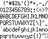

🎯 The objective
Clear every dot from the maze to advance. Power dots turn the ghosts blue for a short time — chase them down for big points before they recover. Fruit appears twice per level for bonus points.
You start with 3 lives; an extra life is awarded at 10,000 points. Mazes cycle through six layouts as you progress.
⌨️ Controls
- ↑ ↓ ← → or WASD — move
- Space — pause / resume
- Q — quit to title screen
- Touch: swipe to steer, tap to pause
- The game buffers your last direction, so you can turn slightly early at a junction.
Click or tap the arcade screen once so the keyboard goes to the game. The three colour buttons switch the original port's palettes.
🏆 Scoring
| Regular dot | 10 |
| Power dot | 50 |
| Ghost (in sequence) | 200–1600 |
| Fruit (by level) | 100 – 5000 |
| Extra life | at 10,000 |
🏅 Credits & original projects
XChomp was written by Jerry J. Shekhel in 1990 for X11 and released into the public domain.
This browser version is cluge's JavaScript/Canvas port (xchomp-js), also released into the public domain under the Unlicense. The port preserves the original ghost AI, sprites, status messages and game sequences.
README credits also thank Karl Asha for the Linux compilation notes. This local copy keeps the game fully self-hosted: one HTML page, one stylesheet, one JavaScript file and the small font image.